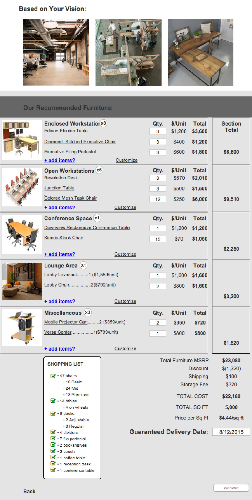

Trending Dish
Pulseband
Overview
PlanTheSpace.com is an E-commerce platform that connects office furniture buyers (architects, small tenants) directly with the furniture dealers. It aims to simplify the commercial office furniture-buying process and open that market up.
Desk Logic is a distinct piece of that experience where the user can view, select, and purchase furniture that best meets their needs. My partner and I were tasked with creating a wireframe for this specific flow.
MY ROLE:
UX Research, Interaction Design,
User Testing, Wireframing
PROGRAMS USED:
Axure, Illustrator
With little knowledge in the office furniture realm, my partner and I first needed to do extensive research. Some of our research objectives were:
1) Understand the current office furniture purchasing process and find pain points. 2) Understand the types and styles of furniture typically offered to commercial tenants.
3) Figure out common patters amongst manufacturers, vendors, and retailers on how they display furniture (both in personal and online).
Our research consisted of:
Industry Analysis
1) Learning the Purchasing Process (42 Floors guide)
2) Attending NeoCon
3) Finding Trends (Furniture Types, Layouts, & Styles)
4) Finding E-Commerce Website Inspiration
Interviews
Conducting informative interviews. Those interviewed consisted of:
- Office Managers
- Small Business owners
- Furniture Dealers
Synthesis
Insights:
Balance between price and aesthetic Modularity
Gap between vision and knowledge
Vision is thought of visually, rather than specific furniture
Timeline
Shipping and delivery painpoints
Durability
Uncertainty & stress
Personas
From our synthesis, we were able to construct a clear and concise problem statement to help direct our design.
“How to create an experience through Desk Logic that provides the users with not only furniture, but a peace of mind that what they have purchased is what they needed.”
Initially, we wanted to test out two design ideas.
1) A “point and click" design for manual selection by the user
PRO: Quick
CON: Little furniture buying website assistance
2) A “guided” design with a series of questions and a site recommendation.
PRO: Assisted purchasing for the user
CON: A Longer process
Ideate
Point & Click (User Flow)
Guided (User Flow)

Create
POINT & CLICK

GUIDED (VISION)

GUIDED (NEEDS)

GUIDED (RECOMMENDATION)

User Test
We tested both wireframes with an experienced furniture dealer and an experienced office manager.
What we discovered was those who are purchasing office furniture desire assistance. Purchasing furniture is a difficult and stressful process involving a good amount of company money. Those is charge of the purchase have many decisions to make and would like to lean on the help of an expert (in this case, PlanTheSpace.com).
With this in mind, we chose a very guided approach to the Desk Logic design.
Refine
Designing for a guided experience and ending with a recommendation inherently leads itself to more questions for the user to answer. There are many things to think about when purchasing office furniture, and the questions we ask could be endless.
Most of our time in this second iteration was spend figuring out essential information to extract from the user, and phrasing our questions in a simple fashion to obtain that information. We ended up with four categories deemed as most important in the furniture buying process and based our questions around them:
1) Space
2) Budget/Time
3) People/Culture
4) Vision
The questions were asked in the “Programming” section of our Desk Logic Flow.
Create
Steps
Our second iteration included five steps. We wanted to make this the first screen so the user would know what to expect when going through the process.
1. Vision
The vision is the first step because it is “fun” for the user. As one of our user interviewees stated “It gets my imagination going a little bit.”
2. Programming
The second step is Programming which is the meat of the entire Desk Logic process. It is a total of five screens comprising roughly 15 questions.
To the right is a summary of these five screens.
1) Space: This screen’s purpose is to figure how much space is available for new furniture.
2) Budget/Time: This screen’s purpose is to get a budget range and a timeframe for how long they have until the furniture is needed.
3) Headcount: This screen’s purpose is to figure out how many people need to be accounted for in terms of chairs, desks, tables, etc.
4) Mix of Spaces: This screen’s purpose is to figure out what type of workstations are desired (open or private) and if there are other spaces that need to be accounted for (Conference rooms, Lounges, Reception area, etc.).
5) Filling Those Spaces: This screen’s purpose is to figure out any customization that may be desired for these workstations (standing desks, chair type, furniture on wheels, etc.)
3. recommendation
Based on what the user has input, the recommendation screen would populate with what PlanTheSpace.com has decided is the ideal furnishing for their space.
Based off of user research, the recommendation screen laid out by workstation/area was ideal.
If the user would like to adjust any of the furniture that was part of the recommendation, they could click adjust and be directed to the adjust screen (below).

4. Adjust
The adjust screen is were the user could change the order from what the recommended choice was.
Based off of our user research, three options was ideal when picking a furniture piece.
Finalize would be a standard checkout flow, which was not a primary focus of ours.
User Testing
We tested wireframe with small business owners and some fellow designers. The good news was that the “Programming” section tested very well. Some of our testers even said “wow, I never would have thought about this. That’s super helpful!”
The constructive criticism we received was based on the “Recommendation” and “Adjust” screens. The testers want to see the price more readily available along with easier ability to adjust the order. They also wanted to see some sort of checklist to tie everything together.
With this information, we designed our final wireframe